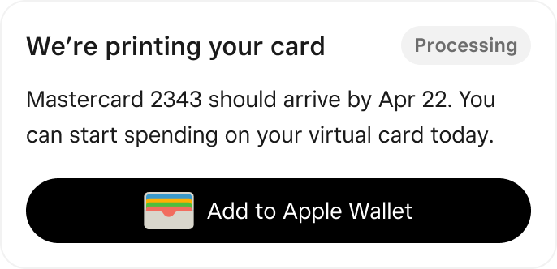
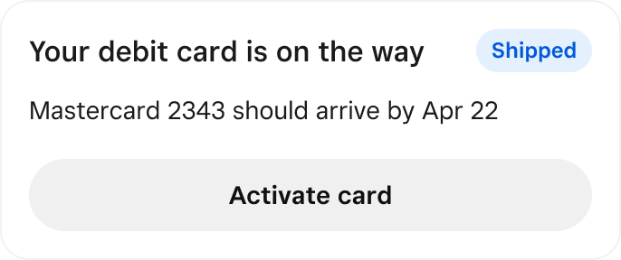
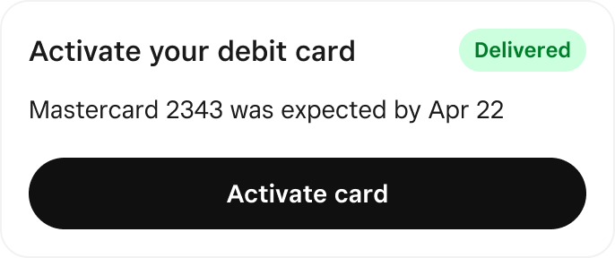
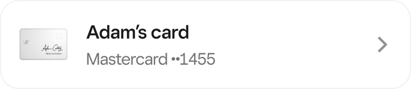

Square · Banking · Checking activation
Turning Square Checking from a pass-through account into a financial home
Sellers signed up for Checking, then routed every payout out. I diagnosed why, then redesigned mobile and Dashboard so first card spend was possible on day one.
Results
32% → 40%+
Onboarding activation
29% → 48%
First card spend in a month
18% → 44%
Apple Pay and Wallet
The situation
Only 32% of Square sellers who signed up for Checking during Square onboarding activated.
Square Checking gave sellers direct access to money. Take a sale on Square, and spend it the same day with a Square debit card instead of waiting on a transfer to an outside bank.
- Square sign up
- Checking signup
- Takes a sale on Square
- Visits Banking
- Moves money out
Only 32% spent from the account or deposited into it. The rest routed every payout to an external bank.
The goal
First card spend within a month was the leading indicator I tracked.
Spend on the Square debit card runs over Mastercard's network and earns interchange. A payout routed out to an external bank earns nothing.
Constraints
- Three weeks, diagnosis to shipping
- Two surfaces. Mobile first (~80% of sales), Square Dashboard web in parallel, not sequential.
Discovery
I didn’t start with new research. I started with what was already known.
I read the existing Banking research corpus, then used AI to cluster it against one question: where does Checking stop matching what a seller expects from a bank?
I pulled the activation funnel with Data Science and segmented it by first action taken.
I audited both surfaces against what the funnel found. The debit card and the money movement levers were below the fold on mobile and buried in navigation on web.
Existing insight plus funnel data got me to a diagnosis.
My decision
Three problems, not one.
Card spend was the strongest activation signal. Money movement was buried below the fold. And sellers did not know first card spend was even possible on day one, because nothing told them the virtual card was live.
Explorations
- Surface the virtual card on first visit
- Build the card tracker as a state system
- Position money movement above the fold
- Build an activation checklist (did not build)
Why?
Sellers did not have a knowledge gap. They had an action gap.
They knew what a debit card was. What they did not know is that the money sitting in that balance was spendable right now. A checklist teaches people something they already understand, at the moment they are least willing to read it.
The design
Debit and money movement above the fold, and a product that tells you what is happening.
A visible card tracker replaced silence. It gives the arrival date for the physical card and says the virtual card works today.
Add to Apple Wallet sits right after enrollment, when motivation is highest.
Deposit, Transfer and Pay moved to the top.
Account and routing numbers are one tap away, because that is what makes it read as a real business bank account.
Point of Sale · before and after
Before
After
Dashboard · before and after
Before
After
The debit card system
Not a pill or static banner. This was one component with four states that each move the seller toward spend.
01 Issued

02 In the mail

03 Delivered, not activated

04 Active, spend

Built in Square's new monochrome design system. Several of these states needed components that did not exist yet, so I defined them and fed them back to the systems team rather than building one-offs.
The results
Behavior moved in the first month, not just the dashboard.
Activation among sellers acquired through onboarding went from 32% to over 40%.
First card spend within a month went from 29% to 48%.
Apple Pay and Wallet adoption went from 18% to 44%.
Both surfaces shipped in the same cycle. Every change went out behind an experiment with the metric registered in advance, measured against that 32% baseline.
What I would do differently: I focused the initial work on getting sellers from issuance to first spend because that was the funded problem.